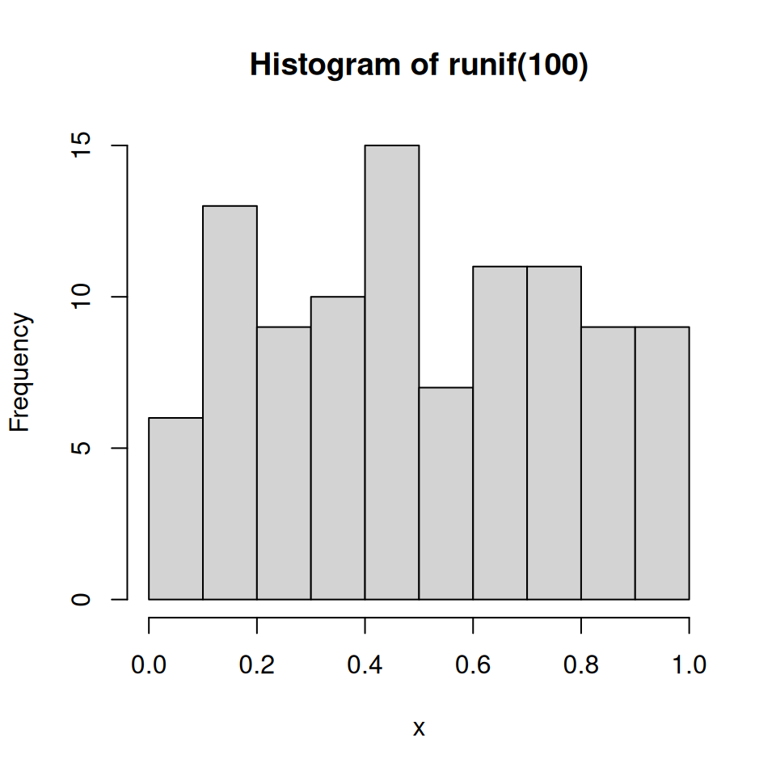
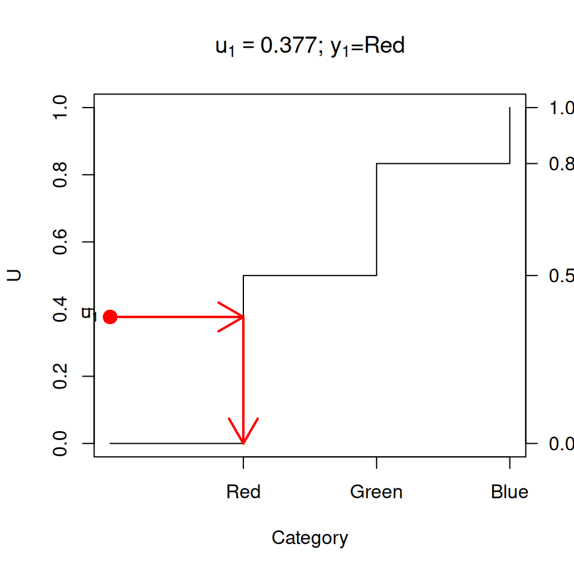
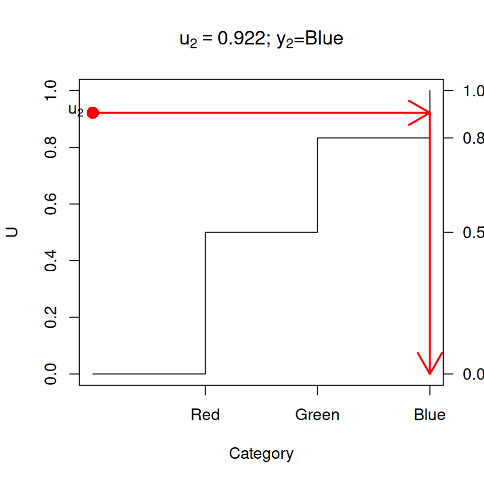
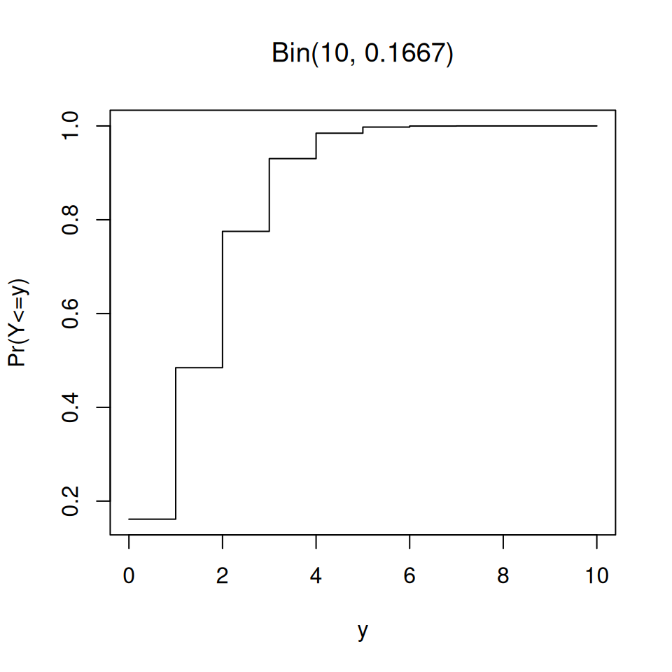
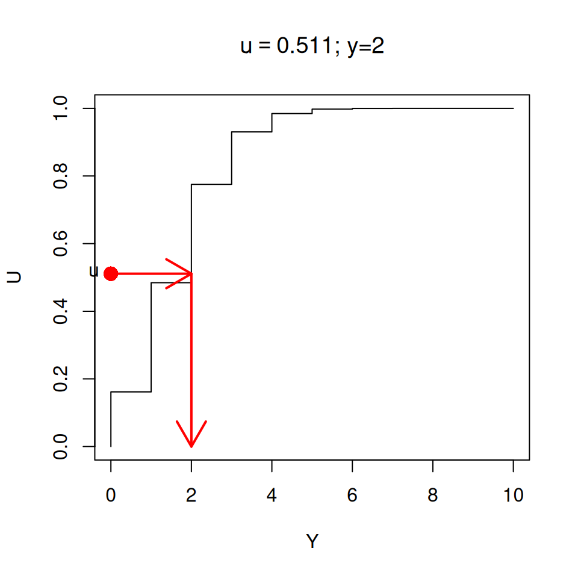
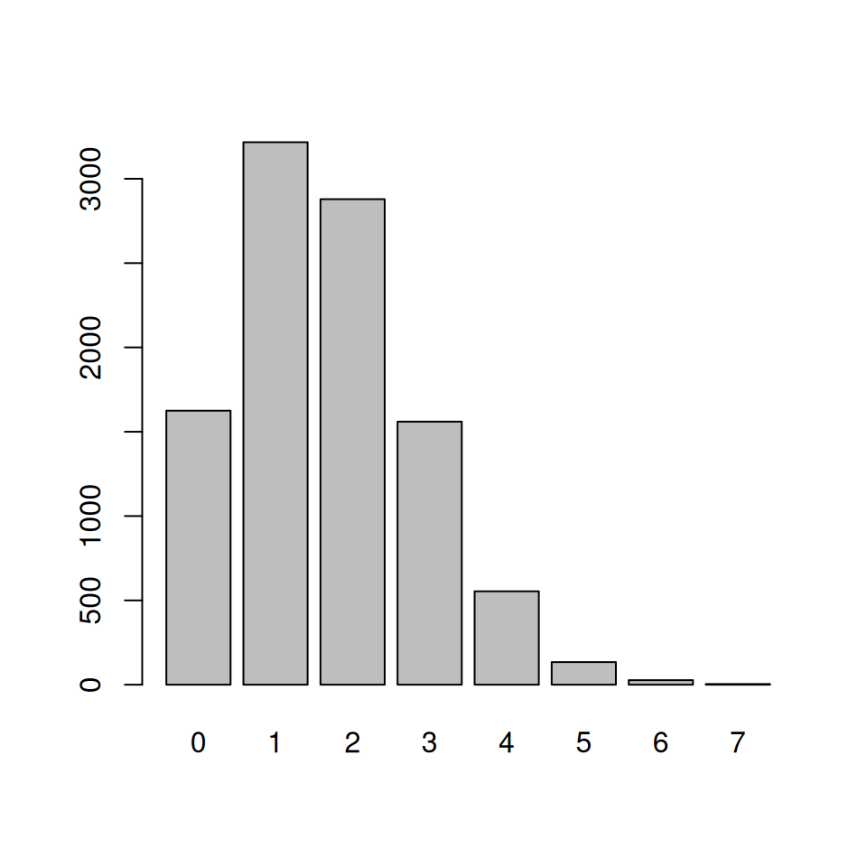
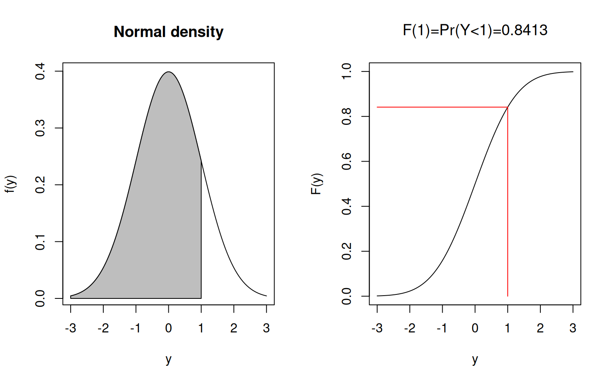
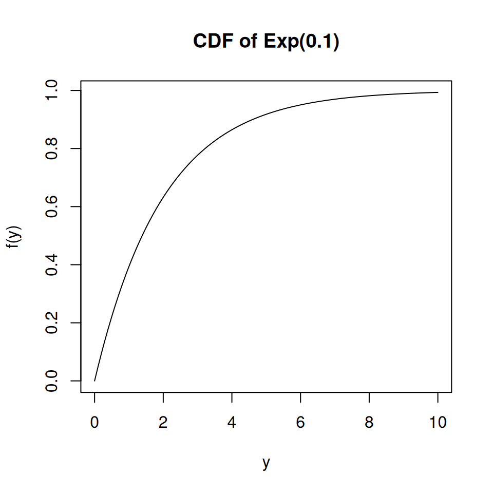

2 Sampling
In statistics the data we analyse is often a subset, i.e. a sample of members of a population.
For example we might have a sample of households whose members respond to a questionnaire, or a sample of plants from a field.
In order to select from a population we first enumerate (list) the population in some way and then make a random selection of our subset members from that list. The method by which we do so is called the sample design.
Our focus in statistics is often the estimation of population characteristics (known as population parameters) on the basis of sample characteristics (which are called sample statistics). We are always aware that the sample we drew from the population is not the only sample we could have drawn, and therefore our conclusions are subject to uncertainty, which we call sampling error.
This uncertainty associated with sampling is the reason we have confidence intervals on our estimates, and why we can neither prove nor disprove hypotheses.

Figure 2.1: Statistical Inference
(One exception is when we do a census where we select and get fully accurate data from every member of the population. Then there’s no uncertainty left at all, and our sampling errors are zero.)
When generating simulated datasets we also generate samples. Simulation is often done as a means of testing out statistical ideas and methods, or (in the case of the bootstrap method) when conventional ways of estimating standard errors (and therefore confidence intervals) don’t work.
Before we get into detail of estimation and inference, let’s spend some time thinking about how sampling works.
2.1 Random numbers
In both settings (sampling and simulation) we need to start with a method of generating random numbers. We’ll start by assuming we have some means of generating a random sequence of numbers uniformly distributed in the interval [0,1]: \[ U_i \sim \text{Uniform}(0,1)\qquad \text{for $i=1,2,3, \ldots$} \] Here ‘uniformly distributed’ means that all values in the range [0,1] are equally likely to occur.
In R this is done using the runif() function. For example to generate 5
random draws from Uniform(0,1):
## [1] 0.2875775 0.7883051 0.4089769 0.8830174 0.9404673Another draw will a different set of random numbers:
## [1] 0.0455565 0.5281055 0.8924190 0.5514350 0.4566147If we draw a histogram of 100 draws it looks a bit lumpy:

Figure 2.2: 100 draws from Uniform(0,1)
But a histogram of 100,000 draws is very uniform:

Figure 2.3: 100000 draws from Uniform(0,1)
Although the numbers appear to be random they are in fact generated using
formulae, so if one knows the formula the sequence of random numbers generated by
runif() is completed predictable. However the formula
is complex enough that there are no easily discernible patterns in sequences of
many millions of draws. These numbers are psuedo-random, but they are
random enough for our purposes.
Underlying the random number generator is a seed value, which initiates the sequence. If we set the seed to a particular value, the sequence of random numbers that will be generated after doing so will always be the same.
## [1] 0.5929813 0.7264811 0.3704220 0.5149238 0.3776632## [1] 0.41833733 0.01065785 0.53229524 0.43216062 0.09368152## [1] 0.55577991 0.59022849 0.06714114 0.04754785 0.15620252## [1] 0.4662952 0.2078233 0.7996580 0.6518713 0.3215092## [1] 0.5929813 0.7264811 0.3704220 0.5149238 0.3776632This property can be very useful when testing and comparing algorithms: we can generate an identical sequence of random numbers and check (for example) that two methods of estimation give the same results on two identical randomly generated datasets.
2.2 Sampling from categorical random variables
Draws from a uniform distribution are all we need to simulate/sample from any distribution.
Heads or tails: if the probability of flipping heads is 0.5,
we can generate n random numbers, and then label any values less
than 0.5 as Heads and the remainder as tails.
## [1] 0.2875775 0.7883051 0.4089769 0.8830174 0.9404673 0.0455565 0.5281055
## [8] 0.8924190 0.5514350 0.4566147## [1] "Heads" "Tails" "Heads" "Tails" "Tails" "Heads" "Tails" "Tails" "Tails"
## [10] "Heads"## y
## Heads Tails
## 4 6##
## Heads Tails
## 5059 4941We can extend this idea to any set of categories.
Red, Green or Blue: Say we have a six sided die: three sides are red, two are green and one is blue.
The probabilities of rolling the three colours are therefore \(\frac12\), \(\frac13\), \(\frac16\) respectively.
These probabilities add to one.
The random variable \(Y\) is the colour that the die shows when we roll it.
## [1] 1In general we might have \(m\) categories, where the probability of that \(Y\) category \(k\) is \(p_k\): \(\Pr(Y=k)=p_k\). and \[ \sum_{k=1}^m p_k = 1 \] We then compute the cumulative probabilities \(c_k\), the partial sums of these probabilities: \[ c_k = \sum_{j=1}^k p_j \] The final cumulative probability \(c_m\) is always 1 by definition.
Implicitly we also have a value \(c_0=0\), which is the the empty sum and always equal to zero.
These cumulative probabilities \(c_k\) are ’the probability that random variable \(Y\) has a category label less than or equal to \(k\): \[ \Pr(Y\leq k) = c_k = \sum_{j=1}^k p_j \]
Red, Green or Blue: the cumulative probabilities are \[\begin{eqnarray*} c_0 &=& 0.0000\\ c_1 &=& p_1 = 0.5000\\ c_2 &=& p_1+p_2 = 0.5000 + 0.3333 = 0.8333\\ c_3 &=& p_1+p_2+p_3 = 0.5000 + 0.3333 + 0.1667 = 1.0000 \end{eqnarray*}\]
## Red Green Blue
## 0.5000000 0.8333333 1.0000000We then take a set of uniform random numbers \(u_1,\ldots,u_n\). We then want to find which of the \(m\) labels corresponds to each random number \(u_i\).
The rule is that if \(u_i\) is less than cumulative probability \(c_k\) but greater than \(c_{k-1}\), then we assign the label \(k\).
There are various ways to do this, here’s a version using case_when() from
the dplyr package:
## [1] 0.37667253 0.92201944 0.99187774 0.97723602 0.23629728 0.10706678 0.03915213
## [8] 0.72802690y <- case_when(u <= cp[1] ~ "Red",
u <= cp[2] ~ "Green",
.default="Blue") # here .default means "otherwise"
data.frame(round(u,5),y)## round.u..5. y
## 1 0.37667 Red
## 2 0.92202 Blue
## 3 0.99188 Blue
## 4 0.97724 Blue
## 5 0.23630 Red
## 6 0.10707 Red
## 7 0.03915 Red
## 8 0.72803 Green## y
## Blue Green Red
## 3 1 4## y
## Blue Green Red
## 0.375 0.125 0.500Note that the categories in the table haven’t come out in the Red-Green-Blue order that we want - instead they’re in the default alphabetical order.
We can fix this by converting y to a factor object:
## y
## Red Green Blue
## 4 1 3Here’s what is really going on: we if we plot the cumulative probabilities as a staircase – a cumulative distribution function (CDF) then we draw \(u_i\) from a Uniform(0,1) distribution, and then find where a horizontal line drawn at the level of \(u_i\) intersects the CDF: and that is the value of the categorical variable \(y_i\).
The larger the probability \(p_k\) the bigger the jump in the staircase, and the larger the probability that category \(k\) will be selected.

Figure 2.4: Drawing a random category

Figure 2.5: Drawing a random category
set.seed(112)
n <- 10000
u <- runif(n)
y <- case_when(u <= cp[1] ~ "Red",
u <= cp[2] ~ "Green",
.default="Blue")
y <- factor(y, levels=names(pp))
table(y)## y
## Red Green Blue
## 4976 3336 1688The sample() function implements this conveniently: select from the integers
1 to m
## y
## 1 2 3
## 5014 3350 1636(need replace=TRUE here, see below).
… or state the vector 1:m explicitly
## y
## 1 2 3
## 5010 3371 1619… or directly from the vector of labels …
y <- sample(c("Red","Green","Blue"), size=n, prob=pp, replace=TRUE)
y <- factor(y,levels=names(pp))
table(y)## y
## Red Green Blue
## 4980 3325 1695… get the labels from pp …
## y
## Red Green Blue
## 4994 3389 16172.3 Sampling from discrete numerical random variables
The ideas above carry straight over to discrete numerical random variables.
The Binomial distribution \(Y\sim\text{Bin}(m,p)\) is the number of successes in \(m\) trials where the probability of success on each trial is the same \(p\), and all the trials are independent.
\(Y\) takes values 0 to \(m\), and those probabilities can be calculated by
\[
P(Y=k) = \binom{m}{k} p^k (1-p)^{m-k} = \frac{m!}{k!(m-k)!} p^k (1-p)^{m-k}
\]
R provides these probabilities in the function dbinom()
e.g. \(m=10\) rolls of a six-sided die, and \(Y\) is the number of times we get a 1, so \(p=1/6\)
## [1] 1.615056e-01 3.230112e-01 2.907100e-01 1.550454e-01 5.426588e-02
## [6] 1.302381e-02 2.170635e-03 2.480726e-04 1.860544e-05 8.269086e-07
## [11] 1.653817e-08barplot(pp, names=0:m,
xlab="y", ylab="Pr(Y=y)",
main=bquote("Bin("*.(m)*","*.(sprintf(" %.4f",p))*")"))
Figure 2.6: Binomial probabilities
The CDF is given by the function pbinom()
plot(0:m, cp, type="s",
xlab="y", ylab="Pr(Y<=y)",
main=bquote("Bin("*.(m)*","*.(sprintf(" %.4f",p))*")"))
Figure 2.7: Binomial CDF
Drawing a single value of \(Y\) proceeds the same way as for a categorical variable:

Figure 2.8: Drawing from a Binomial(10,1/6) distribution
So we can draw multiple values of \(Y\) from Bin(10,\(\frac16\))
using the sample() function:

Figure 2.9: 10000 draws from a Binomial(10,1/6)
Of course R provides a specific function for doing the same thing: rbinom()

Figure 2.10: 10000 draws from a Binomial(10,1/6)
But that function is just doing what we’ve described above using sample().
A particular common example is where we have \(m\) objects and want to select one of them at random, with each object having equal probability of being selected: i.e. each has probability \(1/m\).
2.4 Sampling from continuous random variables
Continous random variables are simulated using the same principle.
The cumulative distribution function (CDF) of a continuous random variable \(Y\) is defined to be \[ F(y) = \Pr(Y\leq y) = \int_{-\infty}^y f(y')\;{\rm d}y' \]
Figure 2.11: Normal distribution density and CDF
We can use \(F(y)\) to draw a random value from the distribution of \(Y\) by first drawing a random value \(U\) from a Uniform(0,1) distribution.
We then solve the equation \[ U = F(y) \] for \(y\): i.e. find the value of \(y\) corresponding to a CDF value of \(U\).
For many standard distributions (including the Normal and Gamma distributions) there is no analytic formula which gives the solution for \(y\) given \(u\): but there are numerical approximations which can be used in those settings.
One simple case which does have an analytic solution is the Exponential distribution \(Y\sim\text{Exp}(\lambda)\). This is a one parameter distribution where \(Y\) is non-negative (\(Y\geq 0\)), and can be used to model cases such the length of time it takes for an event to occur (e.g. the length of time for a radioactive nucleus to decay). The single parameter \(\lambda\) is the rate (e.g. number of radioactive decay events per unit time).
The exponential distribution has probability density function \[ f(y) = \lambda e^{-\lambda y}\qquad \text{where $y\geq 0$} \] and has mean \(E[Y]=1/\lambda\).

Figure 2.12: Exponential probability distribution
The CDF is the integral of the probability density function \[ \Pr(Y\leq y) = F(y) = \int_0^y f(y)\,{\rm d}y \] which for the Exponential distribution is \[ F(y) = \int_0^y \lambda e^{-\lambda t} {\rm d}t = 1 - e^{-\lambda y} \]

Figure 2.13: Exponential cumulative probability distribution
Solving \[ u = F(y) = 1-e^{-\lambda y} \] for \(y\) leads to \[ y = -\frac{1}{\lambda}\log(1-u) \]
Using this function we can easily draw directly from an Exponential distribution.
## [1] 1.990456
Figure 2.14: 10000 draws from an Exponential distribution
2.5 Sampling from a finite collection
The simulations discussed so far all draw from infinite populations: we can set the sample size \(n\) to any value. However it often occurs that we have only a finite population - e.g. when drawing a random sample of students from a class, or households from a suburb for interview. Then the population size \(N\) is finite.
In the general case we have a set of \(N\) units (i.e. students or households) in a population of finite size, and we want to draw a sample of \(n\) of these units.
We usually start by listing or enumerating the units. This list is called a frame or a sample frame.
Consider the case where we have a small street containing \(N=10\) houses, numbered 1-10. We want to select 5 of these houses with equal probability. There are a number of ways we could do this.
2.5.1 Sampling without replacement
If the houses have equal probability then we could proceed as follows:
- We draw a random number from 1-10, e.g. house number 2, and mark it as selected
- We draw another random number from 1-10, e.g. house number 5, and mark it as selected
- We repeat this process, but if we choose a house that is already selected, we discard that selection;
- The process continues until we have a set of 5 distinct houses.
At the start we take our frame (i.e. list) of houses, and initially mark them all as unselected. Then at each step where we successfully select a previously unselected house we mark that house as selected.
bigN <- 10 # population size
frame <- data.frame(house=1:bigN, selected=FALSE)
n <- 5 # sample size
nselected <- 0
while(nselected < n) {
i <- sample(bigN, 1) # sample a single number at random from 1:bigN with equal probability
if(!frame$selected[i]) {
frame$selected[i] <- TRUE
nselected <- nselected + 1
}
}
frame$house[frame$selected]## [1] 1 6 7 8 10It’s not guaranteed how many steps this process is going to take, since the number of times we select a house that has already been selected is random. If the sample size \(n\) is small and the population size \(N\) is large then it will take \(n\) steps, or possibly just a few more. If \(n\) is close to \(N\) and \(N\) is large, it could take a very very long time.
A simpler way to solve this is to assign each house a distinct random number between 0 and 1, and then sort the frame in order of the random numbers.
Our sample of \(n\) units is just the first \(n\) units in the sorted frame. Since the random numbers assigned have no correlation with any property of the units on the frame, then the top \(n\) units of of the sorted frame are a simple random sample from the frame.
bigN <- 10 # population size
frame <- data.frame(house=1:bigN, selected=FALSE)
n <- 5 # sample size
frame$u <- runif(bigN)
frame <- frame[order(frame$u),]
frame$selected[1:n] <- TRUE
frame## house selected u
## 9 9 TRUE 0.0812427
## 4 4 TRUE 0.3739315
## 2 2 TRUE 0.4137952
## 6 6 TRUE 0.4341604
## 10 10 TRUE 0.4909159
## 3 3 FALSE 0.5850114
## 8 8 FALSE 0.8708720
## 5 5 FALSE 0.8837804
## 1 1 FALSE 0.9278206
## 7 7 FALSE 0.9475266## [1] 2 4 6 9 10Of course, the simplest way of all is just to use the sample() function
## [1] 10 4 6 3 2It’s very often that we do have a frame, a list of objects with names, and we want to select from this at random.
frame <- data.frame(Name=c("Mark","Chloe","Sam","Caitlin","Harry","Nina"),
Age=c(20,19,18,19,19,21),
Major=c("STAT","STAT","DATA","COMP","MATH","STAT"))
frame## Name Age Major
## 1 Mark 20 STAT
## 2 Chloe 19 STAT
## 3 Sam 18 DATA
## 4 Caitlin 19 COMP
## 5 Harry 19 MATH
## 6 Nina 21 STATWe can select, say, 3 names
## [1] "Nina" "Sam" "Mark"and then subset the frame
## Name Age Major
## 1 Mark 20 STAT
## 3 Sam 18 DATA
## 6 Nina 21 STATIf you like dplyr
## Name Age Major
## 1 Mark 20 STAT
## 2 Sam 18 DATA
## 3 Nina 21 STATNote we can find out where in the frame particular individuals are located
## [1] 1 5If we’re sampling without replacement, note (of course) that the sample size can be no bigger than the population size \(n\leq N\).
2.5.2 Sampling with replacement
When selecting a sample of 5 houses it makes sense not to allow the possibility
of selecting the same house twice. So when we’ve selected a house we remove
it from the list of houses available to select. When using sample() this means
that we set replace=FALSE, meaning after we’ve selected a member of the population
we don’t put it back again.
But there are occasions where we select with replacement is the sensible thing to do. This means there is a chance where a unit can be selected more than once, and this occurs in situations where we want to assign different probabilities of selection to different units of the population.
Starting with the the case of equal probabilities, we repeatedly draw units from the population under identical circumstances: on every draw each unit is available for selection, and we count how many times each unit is selected.
## [1] 4 3 9 5 3In this sample we’ve drawn Unit 3 twice.
If \(n\) is small and \(N\) is large the probability of repeats is small. But if a repeat happens we of course do not make our selected household repeat the questionnaire, instead we count them twice (or as many times as they are selected) in our analysis.
Imagine our sample of 10 houses aren’t actually just houses, they’re farms, and some of them are very large and some are very small. We want to give the large farms a high chance of selection.
set.seed(122)
bigN <- 10
n <- 5
frame <- data.frame(farm=1:10, ncows=c(1000,5000,2000,500,500,
5000,500,5000,30000,100))
frame## farm ncows
## 1 1 1000
## 2 2 5000
## 3 3 2000
## 4 4 500
## 5 5 500
## 6 6 5000
## 7 7 500
## 8 8 5000
## 9 9 30000
## 10 10 100## [1] 2 2 9 9 9Unsurprisingly, the very large farm number 9 has been selected three times here.
It is possible to have unequal probability sampling without replacement, estimation of standard errors is complicated in such designs, so we won’t be using such designs.
For now, just note that we switch to with replacement designs when we’re sampling from sets of units where want to have units with different probabilities of selection.